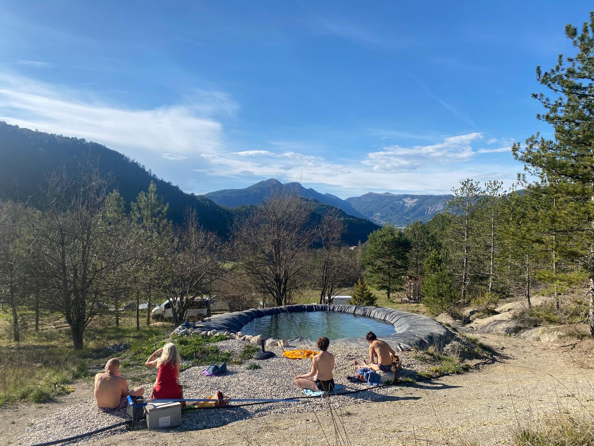
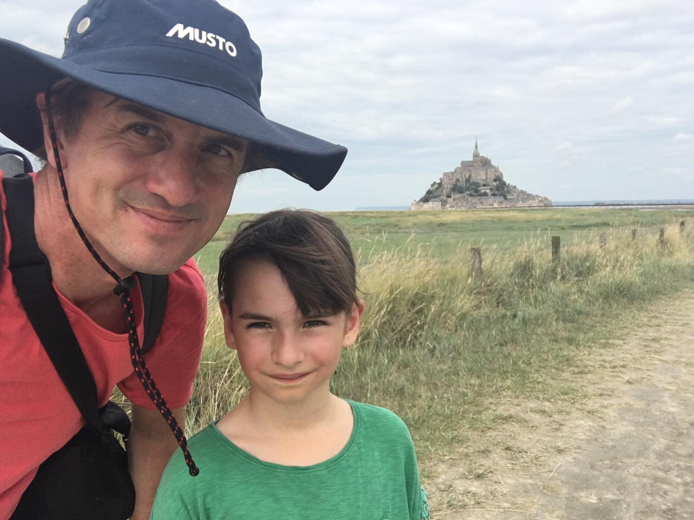

Julie Zimmermann
Intérêt Sens · Accompagnante
Passionnée par le cheminement intérieur et l'élan de vie, Julie crée des espaces de confiance pour traverser les caps et révéler ce qui demande à naître en chacun·e.
Sur les pas de son héros intérieur — pour traverser un cap de vie et te reconnecter à ton élan.
Après une première édition en 2025 riche en profondeur, en rencontres et en transformations, nous vous invitons cette année à vivre une nouvelle traversée, au cœur de vous-même.
Un temps suspendu, en pleine nature, pour déposer ce qui pèse, écouter ce qui appelle, et oser un pas vers la vie qui vous ressemble.
Ce stage est une invitation à semer en soi les graines du renouveau : être accompagné·e pour passer un cap, vivre de nouvelles expériences et s'approcher d'une vie plus authentique, plus libre et plus vivante.
Un espace soutenant, vivant et profondément humain pour ralentir, ressentir, déposer… et repartir avec plus de confiance, de vérité et d'élan.
Gîte Le Chant du Loup — près de Die (Drôme)
En résidentiel, au cœur d'une nature préservée, entre montagnes et grands espaces, propice au ressourcement et à la traversée intérieure. Une mare naturelle, le silence, la lumière : tout y invite à ralentir.

Passionnée par le cheminement intérieur et l'élan de vie, Julie crée des espaces de confiance pour traverser les caps et révéler ce qui demande à naître en chacun·e.

Ami de longue date et passionné de transmission, Julien met le mouvement, le corps et le vivant au service de la transformation. 🌿
Ven. 18 → dim. 20 septembre 2026
Arrivée le vendredi dès 14h
Près de Die, dans la Drôme
Gîte Le Chant du Loup
Week-end résidentiel
hébergement & repas sur place
Sur demande
précisé lors du contact
Pas de formulaire : pour préserver le lien et répondre à vos questions, contactez Julie directement. Le téléphone reste le plus simple.
Contactez-moi pour en savoir plus. 🙏 N'hésitez pas à partager autour de vous.
Je vous embrasse, Julie.